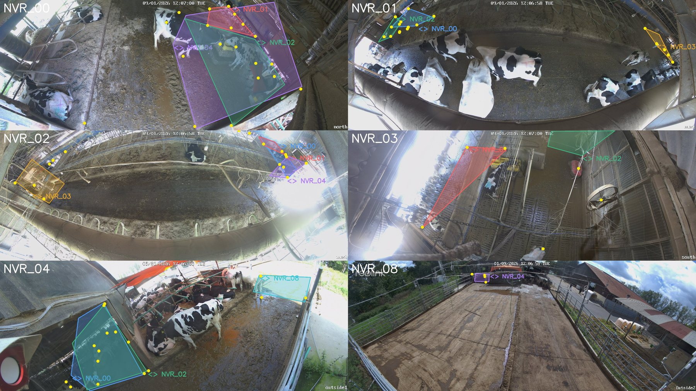
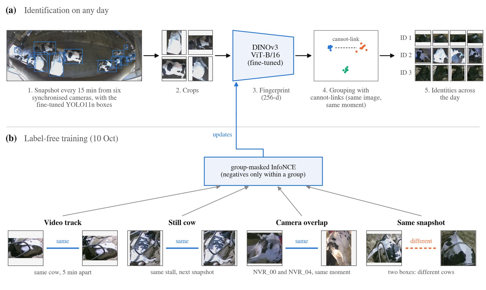
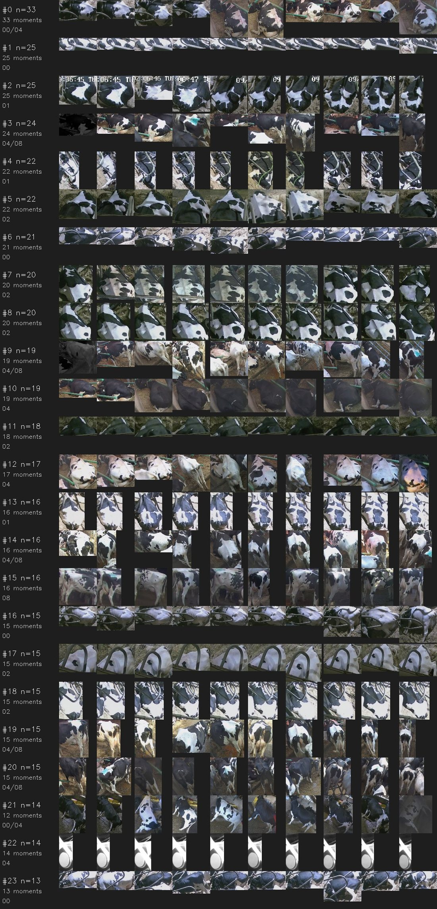
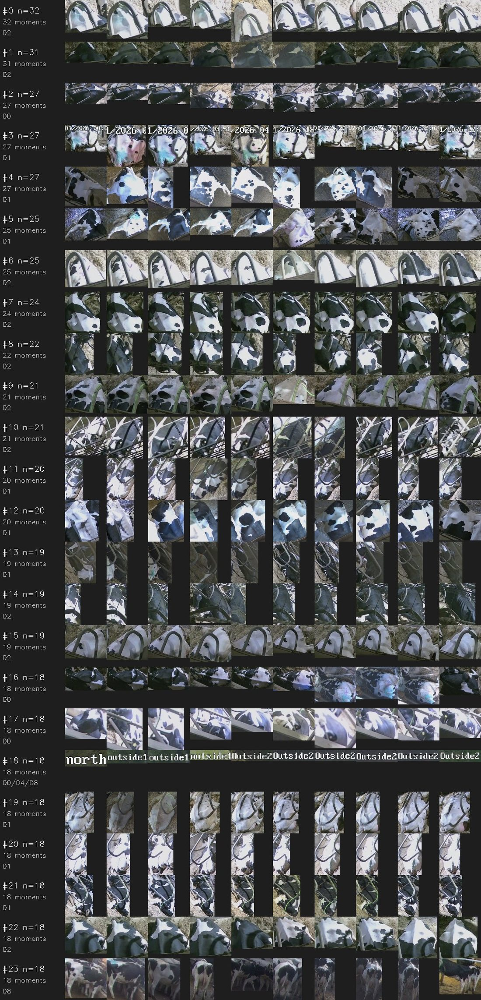
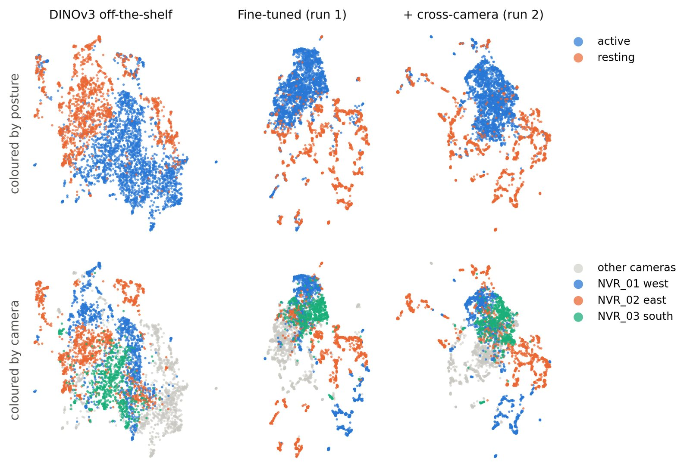
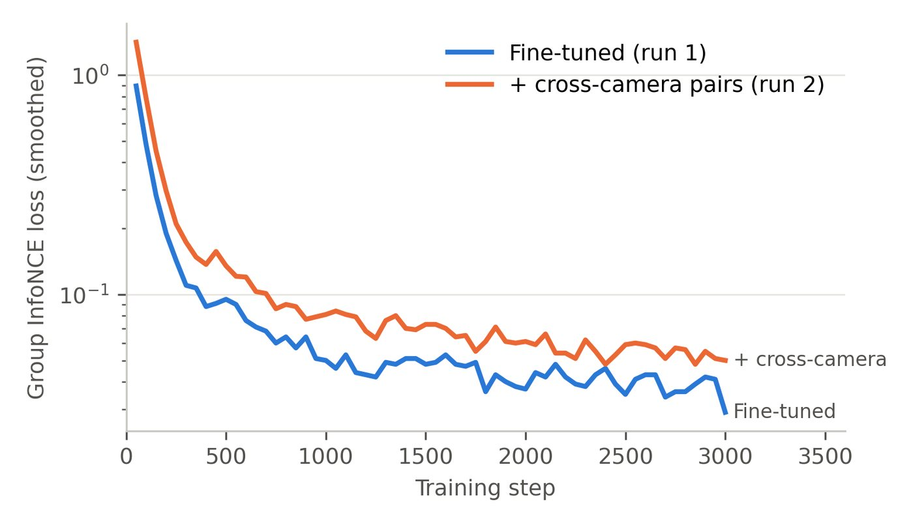
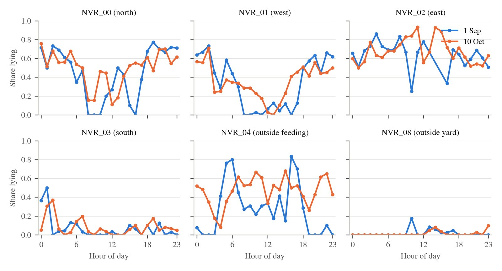

Can we recognise 60 Holstein cows in a barn day after day using only cameras, with no ear-tag readers and no hand-labelled identities? This page summarises where the work stands.
A naturally ventilated research barn with 60 Holstein cows and six time-synchronised cameras: four inside (north, west, east, south), one at the outside feeding area and one in the outside yard. Each camera takes a snapshot every 15 minutes, and all six snapshots are taken within about 2 s of each other. Two cameras also record 24-hour video. I used two full days: 1 Sep and 10 Oct 2026.

The pipeline has two parts. (a) On any day: detect the cows, crop them, compute a DINOv3 embedding ("fingerprint") for each crop, then group the fingerprints into identities. (b) Fine-tune DINOv3 without any identity labels, using pairs whose answer the recording setup already gives:
Training uses a group-masked InfoNCE loss, so negatives are taken only from pairs known to be different cows. The same "cannot be the same cow" rules also act as cannot-link constraints when grouping. The similarity threshold is set so that only 1 % of known-different pairs would be merged.

I corrected 1,338 cow boxes on 120 snapshots (20 per camera) by hand and fine-tuned the YOLO11n detector on 90 of them. I evaluated on the remaining 30 (329 boxes).
| mAP@0.5 | All | North | West | East | South | Feeding | Yard |
|---|---|---|---|---|---|---|---|
| Original detector | 0.473 | 0.507 | 0.569 | 0.662 | 0.283 | 0.523 | 0.106 |
| Fine-tuned | 0.654 | 0.636 | 0.720 | 0.778 | 0.529 | 0.751 | 0.424 |
Posture (lying/standing) is correct for 95 % of the detected cows.
On 24 hours of video from one camera, an online DINOv3 gallery created 382 identities with the original detector. With the better detector it created 634. The new detector finds 56 % more cows, and each extra hard case (short, small, moving) starts a new identity. The identities that never match again are seen for a median of only 4 s.
Evaluated on 1 Sep, a day the fine-tuned model never saw during training (about 4,300 cow crops):
| DINOv3 off-the-shelf | Fine-tuned (label-free) | |
|---|---|---|
| Identities at 1 % false-match rate | 2,287 | 1,024 |
| Singletons | 1,668 | 318 |
| Still-cow pairs kept together | 81 % | 95 % |
| AUC (same still cow vs. known different) | 0.984 | 0.996 |
| Crops in identities seen for ≥ 1 h | 40 % | 74 % |


Without ground-truth identities, I checked 450 pairs by eye, blind to which model produced them.
| Correct matches (precision) | Off-the-shelf | Fine-tuned |
|---|---|---|
| Same camera, within 1 h | 86 % | 89 % |
| Same camera, over hours | 47 % | 53 % |
| Different cameras | 27 % | 54 % |
| Across days (10 Oct ↔ 1 Sep) | 34 % | 44 % |
| Overall (weighted) | 55 % | 60 % |
The fine-tuned model also finds about twice as many correct links (~10,300 vs ~4,900).


